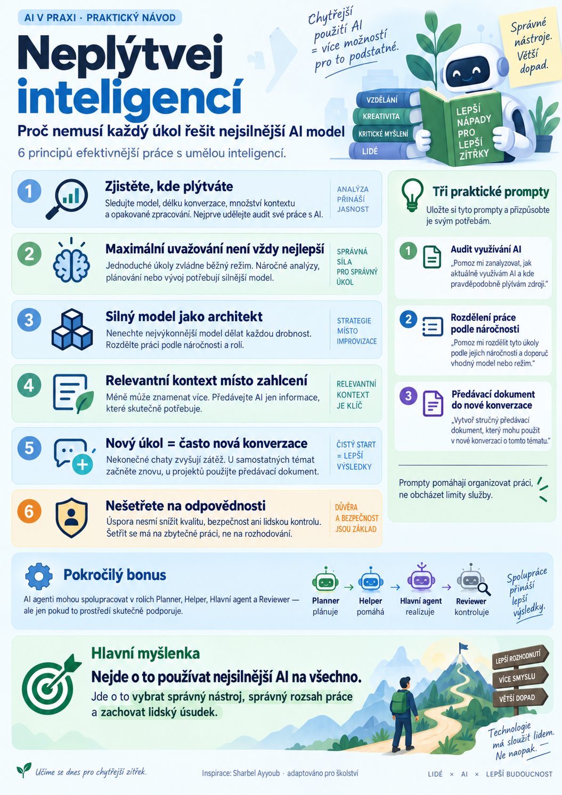

Umělá inteligence je stále výkonnější. Dokáže analyzovat rozsáhlé dokumenty, vytvářet výukové materiály, programovat aplikace nebo řídit práci dalších AI agentů.
Přesto se při jejím používání dopouštíme poměrně jednoduché chyby: na každý úkol nasazujeme ten nejsilnější model, který máme k dispozici.
Je to trochu jako požádat zkušeného architekta, aby nám osobně narýsoval každou čáru, vyplnil každou tabulku a nakonec ještě uklidil pracovní stůl.
Dokázal by to? Pravděpodobně ano.
Je to rozumné využití jeho schopností? Sotva.
Nejde totiž jen o to, co umělá inteligence dokáže. Stejně důležité je vědět, kdy její schopnosti skutečně potřebujeme.

Jak nevyčerpat AI zbytečně
K tomuto zamyšlení mě přivedlo video Sharbela Ayyouba věnované hospodárnějšímu využívání výkonných AI modelů.
Autor představuje šest způsobů, jak omezit zbytečnou spotřebu tokenů při práci s AI a vývojovými agenty.
Titulek videa slibuje, že nám tokeny už nikdy nedojdou. To je samozřejmě nadsázka. Žádný prompt nedokáže odstranit technické ani finanční limity služby.
Podstatnější je myšlenka, která za videem stojí:
Nemusíme šetřit tím, že AI budeme zadávat méně práce. Můžeme se naučit práci lépe organizovat.
A právě tento princip je využitelný i ve školství.
Šest principů efektivnější práce s AI
1. Nejprve zjistěte, kde skutečně plýtváte
Než začneme měnit nastavení AI, měli bychom vědět, co naši spotřebu způsobuje.
Může to být použitý model, hloubka jeho uvažování, délka konverzace, množství dokumentů nebo opakované zpracovávání informací, které pro daný úkol vůbec nepotřebujeme.
U placených API se spotřeba promítá do ceny. U předplatného může ovlivňovat čerpání dostupných limitů.
Praktické prompty
Vyzkoušejte si: Audit práce s AI
Následující prompt můžete použít v prostředí ChatGPT nebo Codexu. Je inspirovaný autorovým původním zadáním, ale doplněný o požadavek na ověřitelnost údajů.
Audit využívání AI
Zmapuje, kde může vznikat zbytečná spotřeba, a navrhne změny bez automatického zásahu do nastavení.
Proveď audit mého současného způsobu práce s AI. Zjisti, které modely a režimy uvažování používám a jak mohou ovlivňovat spotřebu. Pokud máš přístup ke skutečným statistikám mého účtu, uveď dostupné limity, čerpání a čas jejich obnovení. Pokud k nim přístup nemáš, nic neodhaduj jako ověřený údaj. Vysvětli mi, kde je mohu zkontrolovat. Posuď, zda zbytečně neprodlužuji konverzace, nepředávám příliš rozsáhlý kontext nebo nepoužívám zbytečně náročný model. Navrhni tři konkrétní změny, které mohou zvýšit efektivitu mé práce, a uveď jejich případná rizika. Žádné nastavení neměň bez mého souhlasu.
Co získáte: Přehled toho, kde může vznikat zbytečná spotřeba, a doporučení pro její omezení.
Důležité upozornění: samotný prompt nezaručuje přístup ke statistikám vašeho účtu. Výsledek je nutné porovnat s údaji, které skutečně zobrazuje používaná služba.
2. Maximální uvažování není automaticky nejlepší volba
Některé AI nástroje umožňují nastavit, jak intenzivně má model nad úkolem uvažovat.
Vyšší úroveň může pomoci při složitém rozhodování, ale současně může zvýšit náročnost zpracování.
Při tvorbě jednoduchého seznamu slovíček, jazykového cvičení nebo úpravě hotového textu není vždy potřeba zapínat nejvyšší dostupné nastavení.
Jiná situace nastává při analýze několika souvisejících metodických dokumentů, vývoji aplikace nebo řešení složitého odborného problému.
Zkusme si představit běžnou práci učitele.
| Úkol | Jak k němu přistupovat |
|---|---|
| Seznam slovíček k lekci | Jednodušší model nebo běžný režim |
| Pracovní list s jasným zadáním | Běžný režim, přesné požadavky |
| Návrh dlouhodobého tematického plánu | Výkonnější model, více souvislostí |
| Analýza právních předpisů | Důkladné uvažování a ověření zdrojů |
| Vývoj školní aplikace | Plánování, implementace, testování a kontrola |
Nejde o pevný návod, který model vybrat. Důležitá je přiměřenost úkolu.
Nejsilnější model je užitečný tehdy, když skutečně potřebujeme jeho schopnosti.
3. Silný model může být architektem, nikoli vykonavatelem každé drobnosti
Tady se dostáváme k nejzajímavější části.
Místo toho, aby jeden výkonný model dělal úplně všechno, můžeme práci rozdělit podle její náročnosti.
Představme si přípravu nové výukové aplikace.
Jeden model navrhne její strukturu a určí důležité požadavky. Jiný připraví dokumentaci nebo zpracuje jednoduché dílčí úkoly. Další může pomoci s testováním.
Nakonec musí někdo výsledky spojit a ověřit, že celek skutečně funguje.
Tento princip odpovídá práci víceagentních systémů, ve kterých různí AI agenti plní odlišné role.
Nemusíme však být programátory, abychom si podobný přístup vyzkoušeli.
Vyzkoušejte si: AI jako koordinátor práce učitele
Rozdělení práce podle náročnosti
Pomůže rozdělit výukový úkol mezi vhodný model, rutinní zpracování a lidskou kontrolu.
Pomoz mi efektivně připravit následující výukový úkol: [DOPLŇTE SVŮJ ÚKOL] Nejprve jej rozděl na jednotlivé kroky. U každého kroku urči, zda vyžaduje složité uvažování, běžnou tvorbu materiálů, rutinní zpracování informací nebo lidskou kontrolu. Navrhni, které části by mohl zpracovat jednodušší AI model a které vyžadují výkonnější model. Pokud můžeš skutečně využít další agenty nebo nástroje, vysvětli možnosti jejich zapojení. Pokud tuto možnost nemáš, pouze připrav plán rozdělení práce. Nepředstírej, že jsi další agenty spustil. Uveď, které výsledky musí zkontrolovat učitel před použitím ve výuce.
Příklad využití: Příprava tematického celku, tvorba elektronické učebnice, rozsáhlejší sada pracovních listů nebo návrh jednoduché vzdělávací aplikace.
Takto formulované zadání má ještě jednu výhodu. Nutí nás přemýšlet o vlastním úkolu dříve, než jej předáme umělé inteligenci.
4. Méně kontextu může znamenat efektivnější práci
Dlouhé konverzace a rozsáhlé dokumenty jsou jednou z velkých výhod dnešní AI.
Zároveň však mohou být zdrojem zbytečné zátěže.
Pokud agent opakovaně zpracovává rozsáhlé výpisy, staré pracovní podklady nebo informace, které s aktuálním úkolem nesouvisejí, spotřebovává prostředky na něco, co výsledku nemusí pomáhat.
To ovšem neznamená, že máme všechno zkracovat za každou cenu.
Příliš stručné zadání může naopak vést k nedorozumění, opravám a opakované práci.
Smyslem není nejkratší prompt, ale dostatečný a relevantní kontext.
U školních materiálů to znamená předat AI přesně ty zdroje, cíle a omezení, které pro danou práci potřebuje.
Ani méně, ani zbytečně více.
5. Nový úkol nemusí znamenat pokračování nekonečné konverzace
Mnozí z nás mají tendenci vést s AI jednu dlouhou konverzaci, ve které postupně řeší všechno možné.
Začneme pracovním listem, pokračujeme testem, přejdeme k metodice výuky a nakonec řešíme úplně jiný problém.
Výhodou je kontinuita. Nevýhodou může být rostoucí množství kontextu, který už s novým úkolem nesouvisí.
U samostatných témat proto často dává smysl začít novou konverzaci.
U dlouhodobých projektů je situace jiná. Tam potřebujeme zachovat rozhodnutí, důležité souvislosti a návaznost práce.
Řešením může být stručný, ale úplný předávací dokument.
Vyzkoušejte si: Předání projektu do nové konverzace
Předávací dokument
Vytvoří přenositelný kontext pro bezpečné pokračování projektu v nové konverzaci nebo s jiným agentem.
Připrav předávací dokument pro pokračování tohoto projektu v nové konverzaci nebo s jiným AI agentem. Zachovej: * hlavní cíl projektu, * dosavadní důležitá rozhodnutí, * dokončené a ověřené úkoly, * aktuální stav rozpracované práce, * závazné požadavky a omezení, * známá rizika a nevyřešené otázky, * doporučený následující krok. Odstraň pouze opakování a informace, které nejsou potřebné pro další práci. Nevymýšlej chybějící údaje. Jasně rozliš ověřené skutečnosti od předpokladů a návrhů. Výstup připrav jako samostatný dokument, který mohu vložit do nové konverzace.
Praktický přínos: Nemusíme přenášet celý rozhovor. Přenášíme pouze informace potřebné k bezpečnému pokračování práce.
Pozor však na jednu důležitou věc. U rozsáhlých projektů nemůže krátké shrnutí vždy nahradit původní dokumentaci, zdrojové soubory nebo záznamy o provedených kontrolách.
6. Úspora nesmí být na úkor kvality
Efektivita neznamená, že veškerou práci předáme nejlevnějšímu modelu.
Ve školství pracujeme také s legislativou, citlivými informacemi, individuálními potřebami žáků a dokumenty, které mohou ovlivnit skutečná rozhodnutí.
Tam by snaha šetřit nesměla vést k omezení nezbytných kontrol.
Jednodušší model může například připravit seznam ustanovení právních předpisů. To ovšem není totéž jako spolehlivě posoudit jejich aktuálnost, vzájemné souvislosti nebo použití v konkrétní situaci.
Stejně tak není vhodné omezovat bezpečnostní testování aplikace jen proto, že kontrola spotřebovává další prostředky.
Při práci se školními dokumenty navíc musí být používány pouze schválené nástroje a odpovídající zabezpečení osobních údajů.
Šetřit se má na zbytečné práci, nikoli na odpovědnosti.
POKROČILÉ · CODEX · AI AGENTI — Nechte AI agenty spolupracovat
Následující část je určena především čtenářům, kteří již využívají Codex nebo vyvíjejí vlastní aplikace s pomocí AI.
Je to také část, kterou bychom mohli zajímavě využít při vývoji vzdělávacích nástrojů.
Codex podporuje vlastní podagenty. Každému lze určit jeho roli, pravidla práce a v podporované konfiguraci také model a úroveň uvažování.
Například:
| Agent | Úkol |
|---|---|
| Planner | Připravuje plán a kontrolní seznam |
| Pomocný agent | Zpracovává jasně vymezené rutinní úkoly |
| Hlavní agent | Řeší složité problémy a integraci |
| Reviewer | Kontroluje správnost, rizika a testy |
Samotné napsání promptu však nezaručuje, že se další agenti skutečně spustí. Prostředí musí tuto funkci podporovat a musí být správně nakonfigurováno.
Bonusový prompt A: Vytvoření plánovacího agenta
Plánovací agent
Navrhne bezpečně omezeného agenta pro plánování a kontrolní seznamy, nikoli pro samostatné programování.
Prozkoumej aktuální projekt a ověř, zda prostředí podporuje vlastní podagenty. Navrhni podagenta s názvem planner. Jeho úkolem bude převádět zadání na pracovní plán, rozdělovat úkoly na kroky, identifikovat závislosti a připravovat kontrolní seznamy. Nebude samostatně programovat, měnit architekturu ani schvalovat dokončení projektu. Ověř dostupné modely a zvol přiměřený model a úroveň uvažování. Připrav návrh konfigurace pro .codex/agents/planner.toml. Pokud soubor již existuje, nepřepisuj jej. Před provedením změn mi ukaž navrženou konfiguraci a vysvětli její nastavení.
Bonusový prompt B: Vytvoření pomocného agenta
Pomocný agent
Vymezí jednoduché přípravné práce a hranice, za které pomocný agent nesmí samostatně rozhodovat.
Navrhni podagenta s názvem helper pro jednoduché, jasně vymezené úkoly. Jeho činnost může zahrnovat vyhledávání souborů, zpracování přehledů, jednoduchou dokumentaci a přípravné práce. Nesmí samostatně provádět architektonická rozhodnutí, měnit bezpečnostní pravidla ani schvalovat vlastní práci. Vyber dostupný model přiměřený jednoduchým úkolům. Připrav návrh konfigurace pro .codex/agents/helper.toml. Ověř kompatibilitu s aktuální verzí Codexu a pravidly projektu. Existující soubory neměň bez mého souhlasu.
Bonusový prompt C: Hlavní agent jako koordinátor
Koordinátor agentů
Určí odpovědnosti, ověření dostupnosti delegování a bezpečný postup pro koordinaci agentů.
Pro následující úkol vystupuj jako koordinátor práce AI agentů: [DOPLŇTE ÚKOL] Nejprve ověř aktuální stav projektu, dostupné podagenty a platná pravidla. Pokud je delegování dostupné, předej plánovací práci agentovi planner a rutinní úkoly agentovi helper. Složité části implementace, architektonická rozhodnutí a integraci výsledků řeš na odpovídající úrovni. Zajisti požadované testy a nezávislé kontroly. Nepředstírej dokončenou práci ani provedené kontroly. Před zahájením mi předlož plán, rozdělení odpovědností a rizika. Pokud delegování není technicky dostupné, vysvětli omezení a navrhni alternativní postup.
Tyto prompty jsou výchozím návrhem. Neměly by se bez ověření používat jako univerzální konfigurace pro každý vývojový projekt.
Co si z toho může odnést běžný učitel?
Nemusíme hned vytvářet složité systémy spolupracujících agentů.
Stačí začít přemýšlet jinak.
Když potřebuji jednoduché jazykové cvičení, nemusím automaticky zapínat nejvýkonnější model s maximálním uvažováním.
Když potřebuji analyzovat rozsáhlý metodický dokument, má smysl sáhnout po nástroji, který tuto práci zvládne spolehlivěji.
A když vytvářím dlouhodobý projekt, měla bych přemýšlet také nad organizací zdrojů, předáváním kontextu a průběžnou kontrolou výsledků.
Nejdůležitější dovedností totiž postupně přestává být samotné napsání promptu.
Stále větší význam získává schopnost správně zadat práci, vybrat vhodný nástroj, posoudit výsledek a rozhodnout, kdy je potřeba lidský úsudek.
Závěrečné zamyšlení
Možná jsme si na začátku rozvoje generativní AI kladli především otázku:
Co všechno už umělá inteligence dokáže?
Dnes bychom si měli častěji pokládat také jinou:
Jak její schopnosti využívat tak, abychom neplýtvali časem, prostředky ani vlastním úsudkem?
Protože cílem dobré práce s AI není využít co nejvýkonnější model na co největší množství úkolů.
Cílem je dosáhnout kvalitního výsledku přiměřenými prostředky a zachovat odpovědnost za rozhodnutí tam, kam patří.
Technologie má člověku práci usnadňovat. Nemá nás odnaučit přemýšlet o tom, jak práci vlastně organizujeme.
Zdroje a další informace
Inspirací pro tento článek bylo video Sharbela Ayyouba věnované efektivnějšímu využívání AI a jeho doprovodný písemný návod.
- Původní video na YouTube: youtu.be/XgMhU4CE-lQ
- Písemný návod autora včetně původních promptů: sharbel.com/articles/reduce-gpt-6-astra-token-usage
- Oficiální dokumentace OpenAI k podagentům: Codex Subagents
- Oficiální dokumentace OpenAI k nastavení Codexu: Codex Configuration Reference
Prompty v tomto článku jsou vlastní české adaptace původního principu doplněné o požadavky na ověřitelnost, bezpečnost a využití ve školství. Nejde o doslovný překlad autorových promptů.
Článek vznikl jako výsledek společného přemýšlení člověka a AI nad efektivním využíváním umělé inteligence ve vzdělávání.